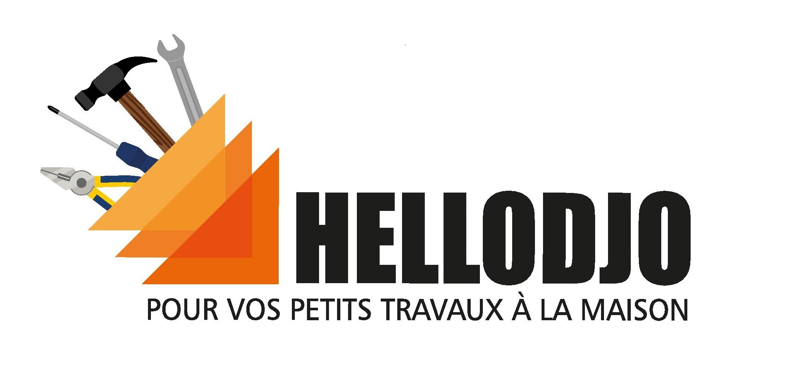
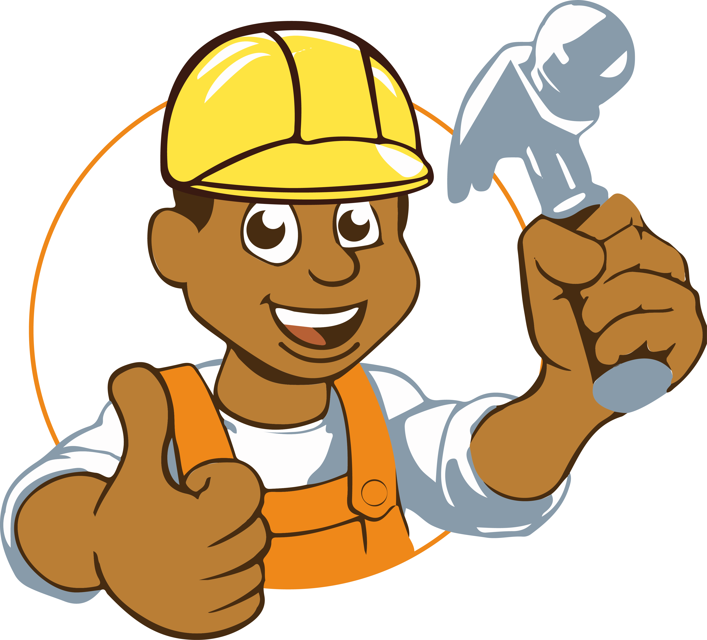

<br>
<div style="display: inline-block;width: 50%;vertical-align: top;justify-content: space-around;"> 
    <div style="text-align: center;">
        
        <div style="text-align: center;width: 75%;margin: auto;font-family:monospace;font-size: 130%;"> Une prise à changer ? Une serrure à remplacer ? 
            Un WC à changer ? Ne vous inquiétez pas, 
            Djo vous trouve une solution pour vos 
            petits travaux à réaliser à votre domicile. <br>
            Pour effectuer votre demande, rien de plus simple:
        </div>
        <br><br>
        <div class="button">
            <div class="buttontext">
                Demander un devis
            </div>
        </div>
    </div>
</div>
<div style="display: inline-block;width: 50%;text-align: center;">
    
</div>
